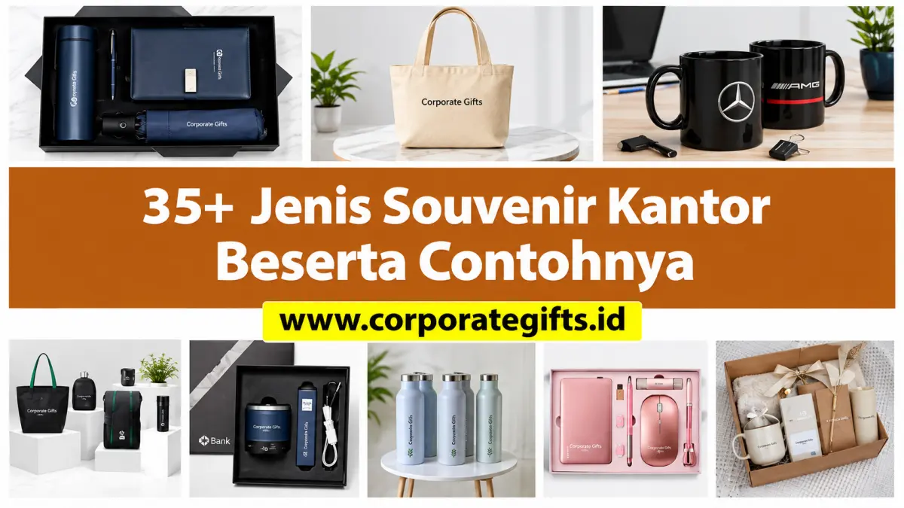

Corporate Gifts ID - Terdapat lebih dari 35 jenis souvenir kantor terpopuler yang terbagi ke dalam delapan pilar kategori strategis: perlengkapan alat tulis (stationery), pakaian dan aksesoris (apparel), perlengkapan minum (drinkware), gadget elektronik, wellness kit, produk ramah lingkungan (eco-friendly), hadiah eksekutif VIP, serta paket hampers korporat. Setiap rumpun produk memiliki karakteristik fungsional, durabilitas, dan segmentasi penerima yang unik, sehingga perencanaannya wajib diselaraskan dengan sasaran branding dan ketersediaan anggaran perusahaan.
Memilih cinderamata kantor yang tepat merupakan langkah fundamental untuk menjamin bahwa alokasi anggaran promosi tidak berakhir sia-sia. Hadiah yang memiliki nilai guna nyata akan senantiasa digunakan dalam aktivitas kerja sehari-hari, secara alami memposisikan identitas visual merek di hadapan klien, mitra bisnis, maupun internal karyawan secara berkelanjutan.
Poin Kunci Kurasi Souvenir Kantor Korporat:
- 8 Rumpun Kategori: Meliputi stationery meja kerja, apparel seragam, drinkware harian, tech gadget, kesehatan, eco-friendly, cenderamata VIP, dan hampers parcel.
- Daya Guna Tinggi: Memilih produk fungsional harian menjamin durasi retensi paparan merek (brand exposure) bertahan berbulan-bulan hingga tahunan.
- Personalisasi Presisi: Teknik cetak (sablon, grafir laser, bordir, deboss) wajib disesuaikan dengan kontur material agar hasil akhir tampak profesional.
- Kesesuaian Anggaran B2B: Pengadaan langsung melalui vendor terpercaya memudahkan negosiasi volume diskon serta penyusunan RAB resmi tanpa risiko pembengkakan biaya.
Urgensi Memilih Kategori Souvenir Kantor yang Relevan
Dalam ekosistem korporasi modern, souvenir bukan lagi sekadar pelengkap seremonial acara perpisahan atau seminar semata. Cinderamata kantor bertindak sebagai representasi fisik dari budaya perusahaan, kualitas layanan, dan apresiasi tulus kepada para penerimanya. Kesalahan dalam memilih item berisiko membuat hadiah dibuang atau tersimpan di laci tanpa pernah digunakan.
Melalui pemahaman atas ragam kategori yang ada, tim HR, procurement, dan marcomm dapat secara presisi menentukan kombinasi produk yang paling tepat untuk momentum tertentu seperti onboarding pegawai baru, company gathering tahunan, kunjungan dinas kemitraan, hingga promosi brand dalam skala konferensi nasional.
Matriks 8 Kategori Souvenir Kantor Terpopuler
Tabel berikut menyajikan ringkasan 8 kategori utama souvenir kantor beserta karakteristik fungsional dan peruntukan momentumnya:
| Kategori Souvenir | Contoh Item Pilihan | Karakteristik Utama | Momentum Terbaik |
|---|---|---|---|
| Stationery Kantor | Pulpen metal laser, agenda kulit, desk organizer, mousepad | Fungsionalitas meja kerja tinggi, biaya ekonomis, exposure harian | Seminar, training internal, rapat kerja, onboarding |
| Pakaian & Aksesoris | Polo shirt Lacoste CVC, tote bag kanvas, jaket bomber, lanyard | Membangun kekompakan tim, mobile branding saat dipakai di luar | Company outing, gathering tahunan, seragam kepanitiaan |
| Peralatan Minum | Tumbler vacuum stainless SUS 304, mug keramik, collapsible bottle | Mendukung gaya hidup sehat, mengurangi sampah plastik sekali pakai | Apresiasi karyawan, souvenir seminar, kampanye CSR hijau |
| Gadget & Elektronik | Powerbank fast-charging, wireless charger pad, speaker bluetooth | Tinggi nilai prestise, modern, menunjang produktivitas digital | Hadiah performa karyawan, merchandise teknologi, kickoff |
| Wellness Kit | Aroma diffuser USB, essential oil, alat pijat portabel, yoga mat | Mencerminkan kepedulian terhadap kesejahteraan fisik & mental | Program employee wellness, reward kesehatan tim kerja |
| Eco-Friendly | Tumbler bambu, sedotan stainless, notebook daur ulang, cutlery kayu | Material berkelanjutan, mendukung pelaporan ESG perusahaan | Seminar keberlanjutan, hari lingkungan hidup, konferensi hijau |
| Souvenir Eksekutif | Set jam tangan, dompet kulit asli, plakat kristal, parfum custom | Eksklusif, kemasan hardbox mewah, personalisasi nama penerima | Kunjungan direksi, perpisahan purna tugas, apresiasi klien VIP |
| Hampers & Parcel | Gift set kombinasi, parcel hari raya, hampers camilan sehat | Multi-item terpadu dalam satu kemasan cantik siap serah | Akhir tahun, Hari Raya Idul Fitri, natal, corporate milestone |

Pilihan paket souvenir kantor fungsional dengan personalisasi logo korporasi presisi tinggi.
Ulasan Mendalam 8 Kategori dan 35+ Contoh Produk
1. Alat Tulis Kantor (Stationery): Klasik dan Selalu Berguna
Perlengkapan alat tulis meja kerja merupakan pilihan paling aman dan terbukti memberikan tingkat utilisasi tinggi. Cinderamata ini secara subtil menempatkan identitas visual perusahaan tepat di hadapan pengguna setiap hari:
- Pulpen Logam Eksklusif: Menggunakan bodi metal dengan finishing doff atau glossy serta teknik ukir grafir laser nama dan logo.
- Buku Agenda Kulit Sintetis: Agenda kerja berpenutup magnetik dengan sisipan profil perusahaan serta pita pembatas halaman.
- Desk Organizer Multifungsi: Wadah meja kayu atau akrilik yang mengorganisasi pena, kartu nama, dan penyangga ponsel.
- Mousepad Ergonomis Gel: Dilengkapi bantalan pergelangan tangan berdesain cetak sublimasi full-color anti-luntur.
- Sticky Notes Set Hardcover: Blok memo catatan tempel aneka ukuran dalam balutan sampul jilid tebal berlogo.
- Kalender Meja Custom: Kalender duduk spiral yang menjadi etalase visual pencapaian perusahaan selama 365 hari penuh.
2. Pakaian dan Aksesoris (Apparel): Penguat Soliditas Tim
Apparel korporasi sangat ampuh dalam menyatukan identitas tim kerja serta memfasilitasi promosi berjalan ketika dikenakan di luar kantor:
- Kaos Polo CVC Bordir: Menggunakan kain Lacoste CVC berpori sejuk dengan bordir komputer tajam di dada dan lengan.
- Tote Bag Kanvas Tebal: Tas serbaguna kuat berdaya muat laptop dan berkas dengan sablon ramah lingkungan.
- Jaket Bomber / Windbreaker: Busana luar elegan berfuring sejuk untuk kegiatan luar ruangan maupun seragam dinas harian.
- Lanyard Printing Sublimasi: Tali ID card bahan tisu lembut beraksesoris kait nikel dan stopper keselamatan.
- Topi Baseball Custom: Topi berbahan twill atau rafel dengan aplikasi bordir timbul (3D) logo perusahaan.
3. Peralatan Minum (Drinkware): Media Promosi Berkelanjutan
Drinkware merupakan perwakilan gaya hidup modern yang peduli terhadap hidrasi sehat sekaligus pengurangan timbulan sampah botol plastik sekali pakai:
- Tumbler Vacuum Insulated SUS 304: Botol termos stainless steel yang menjaga kestabilan suhu panas dan dingin hingga 12 jam.
- Mug Keramik Coating: Cangkir kopi kantor keramik dengan penutup kayu estetik dan sendok teh terintegrasi.
- Botol Minum Fruit Infuser: Botol transparan food-grade berbahan Tritan bebas racun BPA untuk infused water segar.
- Tumbler Silikon Lipat (Collapsible): Botol elastis hemat ruang yang sangat praktis bagi staf bermobilitas tinggi.
- Set Cangkir Gelas Kaca Etsa: Gelas kaca kristal beraksen logo grafir halus untuk ruang rapat dewan direksi.
4. Gadget dan Elektronik: Modern dan Relevan
Sentuhan teknologi mencerminkan transformasi inovatif perusahaan dan hampir selalu disambut antusias oleh generasi pekerja modern:
- Powerbank 10.000 mAh Fast-Charging: Baterai cadangan bersertifikasi proteksi arus pendek dengan port Type-C ganda.
- Wireless Charging Stand: Dudukan pengisian daya baterai nirkabel meja kerja yang efisien tanpa kabel kusut.
- Speaker Bluetooth Mini: Pengeras suara portabel bersuara jernih untuk sarana rekreasi meja maupun telekonferensi santai.
- Flashdisk Logam Dual OTG: Media penyimpanan data berkapasitas 32GB/64GB dengan antarmuka ganda USB-A dan USB Type-C.
- Mini Clip-On LED Ring Light: Lampu portabel penjepit laptop untuk menunjang pencahayaan profesional saat virtual meeting.
5. Kesehatan dan Kesejahteraan (Wellness Kit)
Pemberian paket kesehatan merefleksikan perhatian tulus manajemen terhadap kesejahteraan fisik dan mental para pekerjanya:
- Diffuser Aromaterapi USB & Essential Oil: Pelembap udara meja kerja mini penenang pikiran berbahan aromaterapi alami.
- Alat Pijat Elektrik Portabel: Mesin getar mini pemijat leher dan pundak untuk meredakan ketegangan otot setelah bekerja lama.
- Matras Yoga Anti-Slip Berlogo: Matras senam berdensitas tinggi penunjang kegiatan olahraga komunitas karyawan kantor.
- Paket Sanitasi Higienis: Kotak saku berisi hand sanitizer semprot, strip sabun kertas, dan pouch antibakteri.
6. Souvenir Ramah Lingkungan (Eco-Friendly)
Cinderamata berwawasan lingkungan mendukung pemenuhan target pembangunan berkelanjutan (SDGs) dan memperkuat reputasi ramah alam korporasi:
- Tumbler Bambu Alami: Tabung minum berbodi kayu bambu natural dengan dinding dalam baja tahan karat food-grade.
- Tas Belanja Daur Ulang (rPET): Tas lipat belanja berbahan olahan limbah botol plastik yang kokoh dan tahan cipratan air.
- Set Cutlery Kayu & Sedotan Stainless: Set sendok, garpu, sumpit kayu jati serta sedotan stainless dalam kantong kanvas.
- Buku Catatan Kertas Daur Ulang Kraft: Agenda ramah lingkungan berbahan kertas daur ulang dengan jilid jahitan benang katun.
7. Souvenir Premium dan Eksekutif untuk Klien VIP
Bagi jajaran direksi, komisaris, dan pimpinan rekanan strategis, souvenir eksklusif menjadi bentuk penghormatan berkelas:
- Set Jam Tangan Korporat Elegan: Jam tangan analog bermaterial stainless steel dengan sentuhan ukiran logo halus di bagian plat belakang.
- Dompet Kulit Asli dengan Fitur RFID: Dompet kulit sapi asli bermagnet anti-pencurian data kartu kredit digital.
- Plakat Kristal Optik Eksklusif: Trofi cenderamata penghargaan berbentuk balok kristal transparan berukir laser 3D.
- Parfum Ruang Kerja Kemasan Mewah: Pengharum ruangan reed diffuser dalam botol kaca etsa dengan wewangian kayu mewah.
8. Hampers dan Parcel Kantor: Hadiah Serba Lengkap
Kemasan terintegrasi multi-produk merupakan solusi paripurna dalam menyambut perayaan hari besar keagamaan dan penutupan buku tahunan:
- Gift Box Set Onboarding: Kombinasi tumbler, buku agenda, pulpen metal, dan flashdisk dalam hardbox magnetik presisi.
- Hampers Camilan Sehat & Teh Artisan: Paket stoples kaca berisi kacang panggang organik, madu murni, dan daun teh premium.
- Parcel Hari Raya Idul Fitri / Natal: Bingkisan kue kering toples eksklusif bertema perayaan suci berbalut pita satin berlogo.
Tips Memilih Vendor Pengadaan Souvenir Kantor B2B
Agar pengadaan souvenir kantor berjalan lancar tanpa kendala keterlambatan atau cacat produk, pastikan Anda bermitra dengan vendor B2B berpengalaman:
- Verifikasi Sampel Fisik (Proofing): Mintalah contoh sampel produk riil atau prototipe mockup sebelum menyetujui produksi massal ribuan unit.
- Kejelasan Legalitas dan Faktur Pajak: Pastikan penyedia berbadan usaha resmi yang mampu menerbitkan invoice komersial dan faktur pajak PPN sesuai ketentuan pengadaan korporat.
- Kapasitas Mesin Branding Sendiri: Vendor yang memiliki fasilitas workshop mandiri menjamin kontrol mutu warna dan ketepatan jadwal penyelesaian pesanan.
- Jaminan Garansi Produk: Pilihlah mitra yang memberikan garansi penggantian unit baru apabila ditemukan cacat produksi selama proses pengiriman.
Konsultasikan konsep cinderamata kantor Anda bersama tim kurator Corporate Gifts ID untuk memperoleh penawaran harga pabrik terbaik dan visual mockup digital secara gratis.